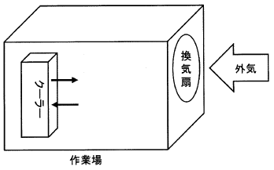

令和6年度 問31 化学プロセス
室内空間容積6,000 m³の作業場がある。作業場内は、作業環境保護のため外気を送風量12,000 m³/hの換気扇で換気している。作業場には換気扇の他に循環風量8,000 m³/h、冷却能力20 kWh（一定値）のクーラーを設置している。外気温が30℃のとき室内温度として、最も近い値はどれか。
なお、室内空気は完全に混合されていて、室内外ともに圧力変動はないものとする。 また、空気比熱は1,010 J/(kg・℃)、空気密度は1.1 kg/m³、1 kWh=3.6×10⁶ Jの一定値とする。

①
19℃
②
22℃
③
25℃
④
28℃
⑤
31℃
正答
③ 25℃
正答は3番です。
定常状態における作業場内の熱収支（換気による加熱 vs クーラーによる冷却）を考えます。
1. 質量流量の計算
換気による外気の導入量を質量流量 $W$ [kg/h] に変換します。
$W = 12,000 \text{ m³/h} \times 1.1 \text{ kg/m³} = 13,200 \text{ kg/h}$
※循環風量は室内空気の冷却には寄与しますが、外部との熱交換は冷却能力（20 kWh）として与えられているため、質量流量としての計算には換気量を用います。
2. 熱収支式の作成
室内温度を $T$ [℃] とします。
・換気による加熱速度 $Q_{in}$ (外気30℃から室温 $T$ への変化):
$Q_{in} = W \cdot c \cdot (30 - T)$
$Q_{in} = 13,200 \text{ kg/h} \times 1,010 \text{ J/(kg・℃)} \times (30 - T)$
$Q_{in} \approx 13,332,000 \times (30 - T) \text{ J/h} = 13.33 \times (30 - T) \text{ MJ/h}$
・クーラーによる冷却速度 $Q_{out}$:
$Q_{out} = 20 \text{ kWh} = 20 \times 3.6 \times 10^6 \text{ J/h} = 72 \text{ MJ/h}$
3. 室内温度 $T$ の算出
定常状態では $Q_{in} = Q_{out}$ となるため、
$13.33 \times (30 - T) = 72$
$30 - T = 72 / 13.33 \approx 5.4$
$T \approx 30 - 5.4 = 24.6 \text{ ℃}$
最も近い値は25℃となります。